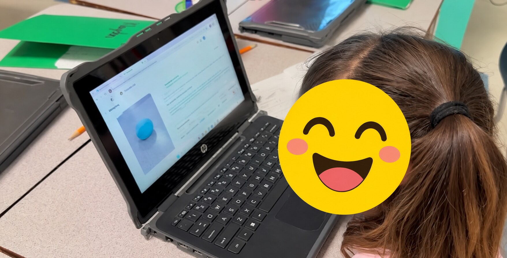

Children increasingly encounter AI that can answer questions, tell stories, and act like a social partner. Yet interacting with AI does not necessarily help them understand how it works or recognize its limitations.
Through a research–practice partnership with a rural North Carolina school district, Elementary AI integrates AI literacy into elementary reading, writing, and mathematics. Working with teachers, we design learning experiences that position children as creators who can question, test, and shape AI through familiar stories, toys, and classroom activities.
ToyTalk Curriculum
Within Elementary AI, the ToyTalk curriculum connects AI learning with reading, storytelling, and hands-on activities. Children imagine what familiar toys could become with AI, design their characters, and explore how they behave through conversation.

Bringing AI Literacy into Everyday Learning
The broader partnership spans six elementary schools and more than 300 students. We co-design interdisciplinary learning materials and support teachers through weekly professional learning and classroom implementation. Storytelling, reading, writing, and hands-on activities give children meaningful reasons to ask what AI knows, how it behaves, and whether its responses can be trusted.

ToyTalk: From Familiar Toys to AI Characters
What if children could decide what their own toys become with AI? We developed ToyTalk, a no-code platform where children configure and converse with AI-enabled versions of familiar toys. Children make decisions about their characters’ knowledge, personalities, and behavior, then experience how those choices unfold in conversation. Teacher controls support classroom orchestration and safety.
- 01 / IMAGINEStart with a familiar toy
Give the toy a name and imagine its role, purpose, and capabilities.
- 02 / CONFIGUREShape its character
Define its personality and rules through a guided, no-code interface.
- 03 / TEST & REVISITSee how it responds
Converse through text or speech, probe its behavior, and return to revise its settings.
These activities connect AI design to literacy: children describe characters, articulate expectations, and use dialogue to explore what their creations can and cannot do.
What We Learned from ToyTalk
Children designed socially meaningful characters.
They predominantly gave their toys positive personalities, supportive roles, and interpersonal rules. Familiar toys provided a concrete starting point for deciding who an AI character should be.
Conversation became a space for experimentation.
Children most often tested identity and knowledge, while also exploring capabilities, memory, and relationships. Their questions drew on social and relational understandings to investigate AI behavior.
Responding to a mismatch did not always mean redesigning.
When a toy behaved unexpectedly, children typically corrected it, persisted, or tested it again in conversation. Few returned to reconfigure the system, revealing a need for support that connects exploration to intentional evaluation and redesign.
Together, these findings suggest that children’s everyday understandings can be resources for exploring AI, while moving from interaction to deliberate design requires scaffolding. Read the study →
Selected Publications
Ongoing Work
I am extending this work toward classroom-embedded assessments of young children’s AI literacy and supports for more intentional testing and redesign. A next step is to study scaffolds that invite children to predict a character’s behavior, compare it with what happens, explain the difference, and revise their design.
Working with teachers, I also investigate how AI literacy can become a sustainable part of reading, writing, and mathematics instruction.
Project Support
Supported by NSF Award #2524505, Leveraging AI Innovation to Enhance School-Wide Literacy Through Active Learning in Montgomery County, North Carolina, Elementary Schools. Principal investigators: Drs. Tiffany Barnes, Shiyan Jiang, and Xiaoyi Tian.
Updated · Nov 2026